CODING AGENTS AS PIXEL WORLD MODELS
traex/DeepSeek-V4.1-Flash · phygen_135
点击播放 · 原生 RGB 像素
逐轮保存的候选
回放视频、检查图与代码变化。
每份候选均可单独播放。实际图片检查记录在下方工具轨迹中。
候选 01播放与检查图
点击播放 · 原生 RGB 像素

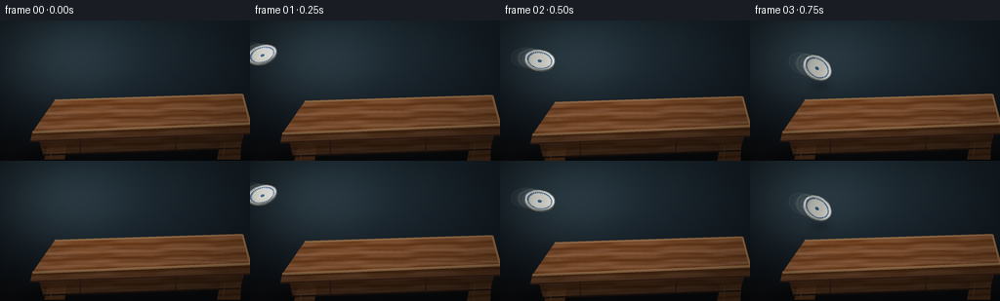
展开代码变化
--- 上一保存版本
+++ 本次保存版本
@@ -0,0 +1,684 @@
+from __future__ import annotations
+
+import json
+import math
+import random
+from pathlib import Path
+
+import numpy as np
+from PIL import Image, ImageDraw, ImageFilter
+
+import artifact_io
+
+
+ROOT = Path(__file__).resolve().parent
+SPEC = json.loads((ROOT / "task_spec.json").read_text())
+W = int(SPEC["width"])
+H = int(SPEC["height"])
+N = int(SPEC["frames"])
+FPS = float(SPEC["fps"])
+SS = 4
+SW, SH = W * SS, H * SS
+
+RNG = np.random.default_rng(135)
+
+
+def sc(v: float) -> float:
+ return v * SS
+
+
+def scaled_points(points):
+ return [(sc(x), sc(y)) for x, y in points]
+
+
+def clamp(v, lo=0.0, hi=255.0):
+ return max(lo, min(hi, v))
+
+
+def norm(v):
+ length = math.sqrt(sum(c * c for c in v))
+ if length < 1e-9:
+ return (0.0, 0.0, 1.0)
+ return tuple(c / length for c in v)
+
+
+def cross(a, b):
+ return (
+ a[1] * b[2] - a[2] * b[1],
+ a[2] * b[0] - a[0] * b[2],
+ a[0] * b[1] - a[1] * b[0],
+ )
+
+
+def sub(a, b):
+ return (a[0] - b[0], a[1] - b[1], a[2] - b[2])
+
+
+def matmul(a, b):
+ return tuple(
+ tuple(sum(a[i][k] * b[k][j] for k in range(3)) for j in range(3))
+ for i in range(3)
+ )
+
+
+def mv(m, v):
+ return tuple(sum(m[i][j] * v[j] for j in range(3)) for i in range(3))
+
+
+def rot_x(angle):
+ c, s = math.cos(angle), math.sin(angle)
+ return ((1.0, 0.0, 0.0), (0.0, c, -s), (0.0, s, c))
+
+
+def rot_y(angle):
+ c, s = math.cos(angle), math.sin(angle)
+ return ((c, 0.0, s), (0.0, 1.0, 0.0), (-s, 0.0, c))
+
+
+def rot_z(angle):
+ c, s = math.cos(angle), math.sin(angle)
+ return ((c, -s, 0.0), (s, c, 0.0), (0.0, 0.0, 1.0))
+
+
+def rotation(yaw, pitch, roll):
+ return matmul(rot_z(roll), matmul(rot_y(yaw), rot_x(pitch)))
+
+
+LIGHT = norm((-0.52, -0.62, 0.78))
+
+
+def shade(base, normal, boost=1.0, gloss=0.16):
+ n = norm(normal)
+ diffuse = max(0.0, n[0] * LIGHT[0] + n[1] * LIGHT[1] + n[2] * LIGHT[2])
+ spec = max(0.0, n[2] * 0.72 + n[0] * -0.45 + n[1] * -0.52)
+ spec = spec ** 16
+ scale = 0.44 + 0.56 * diffuse
+ out = []
+ for c in base:
+ out.append(int(clamp((c * scale + 255.0 * gloss * spec) * boost)))
+ return tuple(out)
+
+
+def make_background():
+ yy = np.linspace(0.0, 1.0, SH, dtype=np.float32)[:, None, None]
+ xx = np.linspace(0.0, 1.0, SW, dtype=np.float32)[None, :, None]
+ ones = np.ones((SH, SW, 1), dtype=np.float32)
+ top = np.array([32, 47, 57], dtype=np.float32)
+ bottom = np.array([14, 18, 23], dtype=np.float32)
+ img = top[None, None, :] * (1.0 - yy) + bottom[None, None, :] * yy + ones * 0.0
+
+ # A soft pool of cool window light from the upper left.
+ gx = (xx - 0.24) / 0.33
+ gy = (yy - 0.24) / 0.40
+ pool = np.exp(-(gx * gx + gy * gy) * 1.35).astype(np.float32)
+ img += pool * np.array([21.0, 27.0, 28.0], dtype=np.float32)
+
+ # A dark floor plane recedes behind the table.
+ floor_start = 0.78
+ floor_mix = np.clip((yy - floor_start) / (1.0 - floor_start), 0.0, 1.0)
+ floor = np.array([20, 18, 17], dtype=np.float32)[None, None, :]
+ img = img * (1.0 - floor_mix * 0.45) + floor * (floor_mix * 0.45)
+
+ # Sparse wall grain keeps the low-resolution background from feeling flat.
+ noise = RNG.normal(0.0, 1.15, (SH, SW, 1)).astype(np.float32)
+ img += noise
+
+ # Vignette.
+ vx = (xx - 0.5) / 0.62
+ vy = (yy - 0.5) / 0.68
+ vignette = np.clip(1.0 - 0.34 * (vx * vx + vy * vy), 0.56, 1.0)
+ img *= vignette
+
+ return Image.fromarray(np.clip(img, 0, 255).astype(np.uint8), "RGB")
+
+
+def wood_array():
+ x = np.arange(SW, dtype=np.float32)[None, :] / SS
+ y = np.arange(SH, dtype=np.float32)[:, None] / SS
+ warp = 0.72 * np.sin(x * 0.072 + 0.6) + 0.24 * np.sin(x * 0.19)
+ broad = np.sin(y * 0.47 + x * 0.013 + warp)
+ fine = np.sin(y * 1.36 + x * 0.045 + 0.45 * np.sin(x * 0.11))
+ fibers = np.sin(y * 3.9 + x * 0.08)
+ light = 1.08 - 0.16 * (x / W) - 0.10 * (y / H)
+ base = np.array([126, 78, 45], dtype=np.float32)
+ img = base[None, None, :] + (broad[:, :, None] * 13.0)
+ img += fine[:, :, None] * 7.0 + fibers[:, :, None] * 2.5
+ img *= light[:, :, None]
+ return np.clip(img, 0, 255).astype(np.uint8)
+
+
+def polygon_mask(points):
+ mask = Image.new("L", (SW, SH), 0)
+ ImageDraw.Draw(mask).polygon(scaled_points(points), fill=255)
+ return mask
+
+
+def textured_polygon(layer, points, texture, shade_mul=1.0):
+ mask = polygon_mask(points)
+ tex = Image.fromarray(np.clip(texture.astype(np.float32) * shade_mul, 0, 255).astype(np.uint8), "RGB")
+ layer.paste(tex, (0, 0), mask)
+ return mask
+
+
+def build_table():
+ layer = Image.new("RGBA", (SW, SH), (0, 0, 0, 0))
+ top = [(56, 83), (248, 77), (256, 107), (33, 116)]
+ front = [(33, 116), (256, 107), (256, 117), (31, 125)]
+ apron = [(40, 124), (250, 117), (246, 132), (44, 139)]
+ left_leg = [(49, 130), (68, 129), (66, 144), (45, 144)]
+ right_leg = [(226, 124), (247, 123), (246, 144), (222, 144)]
+
+ tex = wood_array()
+ textured_polygon(layer, top, tex, 1.0)
+ textured_polygon(layer, front, tex, 0.66)
+ textured_polygon(layer, apron, tex, 0.48)
+ textured_polygon(layer, left_leg, tex, 0.60)
+ textured_polygon(layer, right_leg, tex, 0.55)
+
+ draw = ImageDraw.Draw(layer)
+
+ # Plank seams and long grain are clipped to the tabletop.
+ seams = Image.new("RGBA", (SW, SH), (0, 0, 0, 0))
+ sd = ImageDraw.Draw(seams)
+ for offset, alpha in ((0, 86), (1.2, 35)):
+ for base_y in (91.5, 101.0):
+ pts = [(x, base_y + 0.033 * (x - 128) + offset) for x in range(30, 258, 4)]
+ sd.line(scaled_points(pts), fill=(52, 27, 15, alpha), width=max(1, int(SS * 0.8)))
+ layer.alpha_composite(Image.composite(seams, Image.new("RGBA", (SW, SH), (0, 0, 0, 0)), polygon_mask(top)))
+
+ # Bevels make the top read as a heavy slab rather than a flat brown shape.
+ draw.line(scaled_points(top), fill=(206, 142, 84, 165), width=SS * 2)
+ draw.line(scaled_points([(33, 116), (256, 107)]), fill=(223, 158, 96, 210), width=SS * 2)
+ draw.line(scaled_points([(33, 116), (256, 107)]), fill=(255, 203, 143, 80), width=max(1, SS))
+ draw.line(scaled_points([(31, 125), (256, 117)]), fill=(55, 29, 17, 230), width=SS * 2)
+ draw.line(scaled_points([(44, 139), (246, 132)]), fill=(36, 20, 13, 185), width=SS * 2)
+
+ # A few darker checks in the apron and legs suggest solid joinery.
+ draw.line(scaled_points([(82, 123), (82, 138)]), fill=(55, 29, 17, 130), width=SS)
+ draw.line(scaled_points([(181, 120), (179, 135)]), fill=(55, 29, 17, 115), width=SS)
+ draw.line(scaled_points([(53, 132), (51, 144)]), fill=(231, 170, 103, 70), width=SS)
+ draw.line(scaled_points([(230, 126), (228, 144)]), fill=(231, 170, 103, 55), width=SS)
+ return layer
+
+
+BACKGROUND = make_background()
+TABLE = build_table()
+
+
+PLATE_R = 15.2
+RIM_H = 1.55
+PLATE_THICKNESS = 0.68
+RINGS = 7
+SECTORS = 40
+
+
+def plate_surface_z(r):
+ q = r / PLATE_R
+ return RIM_H * (q ** 4)
+
+
+def build_plate_faces():
+ top_verts = []
+ bottom_verts = []
+ for j in range(RINGS + 1):
+ r = PLATE_R * (j / RINGS)
+ row_t, row_b = [], []
+ for a in range(SECTORS):
+ ang = 2.0 * math.pi * a / SECTORS
+ x, y = r * math.cos(ang), r * math.sin(ang)
+ row_t.append((x, y, plate_surface_z(r)))
+ row_b.append((x, y, -PLATE_THICKNESS))
+ top_verts.append(row_t)
+ bottom_verts.append(row_b)
+
+ faces = []
+ for j in range(RINGS):
+ for a in range(SECTORS):
+ b = (a + 1) % SECTORS
+ # Top faces, wound to point toward +z.
+ faces.append(("top", (top_verts[j][a], top_verts[j + 1][a], top_verts[j + 1][b])))
+ faces.append(("top", (top_verts[j][a], top_verts[j + 1][b], top_verts[j][b])))
+ # Bottom faces, wound to point toward -z.
+ faces.append(("bottom", (bottom_verts[j][a], bottom_verts[j][b], bottom_verts[j + 1][b])))
+ faces.append(("bottom", (bottom_verts[j][a], bottom_verts[j + 1][b], bottom_verts[j + 1][a])))
+
+ outer = RINGS
+ for a in range(SECTORS):
+ b = (a + 1) % SECTORS
+ faces.append(("side", (top_verts[outer][a], bottom_verts[outer][a], bottom_verts[outer][b])))
+ faces.append(("side", (top_verts[outer][a], bottom_verts[outer][b], top_verts[outer][b])))
+ return faces
+
+
+PLATE_FACES = build_plate_faces()
+
+
+def project_point(p, center, rmat, perspective=700.0):
+ x, y, z = mv(rmat, p)
+ factor = 1.0 / (1.0 + z / perspective)
+ return (sc(center[0] + x * factor), sc(center[1] + y * factor), z)
+
+
+def porcelain_color(radius, angle, kind="top"):
+ q = radius / PLATE_R
+ if kind == "bottom":
+ return (191, 194, 190)
+ if 0.795 <= q <= 0.858 or 0.677 <= q <= 0.697:
+ return (47, 91, 142)
+ if q < 0.155:
+ return (61, 105, 151)
+ warm = 2.0 * math.sin(angle * 3.0 + q * 8.0)
+ return (int(235 + warm), int(235 + warm * 0.8), int(226 + warm * 0.5))
+
+
+def render_plate(center, yaw, pitch, roll):
+ layer = Image.new("RGBA", (SW, SH), (0, 0, 0, 0))
+ draw = ImageDraw.Draw(layer)
+ rmat = rotation(yaw, pitch, roll)
+ projected = []
+ for kind, verts in PLATE_FACES:
+ p = [project_point(v, center, rmat) for v in verts]
+ normal = norm(cross(sub(verts[1], verts[0]), sub(verts[2], verts[0])))
+ normal = mv(rmat, normal)
+ if normal[2] <= 0.012:
+ continue
+ cx = sum(v[0] for v in verts) / 3.0
+ cy = sum(v[1] for v in verts) / 3.0
+ radius = math.hypot(cx, cy)
+ angle = math.atan2(cy, cx)
+ base = porcelain_color(radius, angle, "bottom" if kind == "bottom" else "top")
+ if kind == "side":
+ base = (212, 211, 201)
+ color = shade(base, normal, boost=0.95, gloss=0.10)
+ elif kind == "bottom":
+ color = shade(base, normal, boost=0.94, gloss=0.08)
+ else:
+ color = shade(base, normal, boost=1.02, gloss=0.20)
+ depth = sum(v[2] for v in p) / 3.0
+ projected.append((depth, p, color, kind))
+
+ projected.sort(key=lambda item: item[0])
+ for _, p, color, _ in projected:
+ draw.polygon([(x, y) for x, y, _ in p], fill=color + (255,), outline=color + (255,))
+
+ # A narrow ceramic rim catches the key light.
+ rim_pts = []
+ for a in range(SECTORS + 1):
+ ang = 2.0 * math.pi * a / SECTORS
+ rim_pts.append(project_point((PLATE_R * 0.985 * math.cos(ang), PLATE_R * 0.985 * math.sin(ang), RIM_H), center, rmat))
+ draw.line([(x, y) for x, y, _ in rim_pts], fill=(246, 247, 236, 150), width=max(1, SS))
+
+ # Small specular glints on the upper-left lip.
+ glint = []
+ for a in range(94, 158, 4):
+ ang = math.radians(a)
+ glint.append(project_point((PLATE_R * 0.94 * math.cos(ang), PLATE_R * 0.94 * math.sin(ang), RIM_H + 0.08), center, rmat))
+ draw.line([(x, y) for x, y, _ in glint], fill=(255, 255, 250, 205), width=max(2, int(SS * 1.2)))
+ return layer
+
+
+def with_alpha(layer, alpha):
+ out = layer.copy()
+ a = np.asarray(out.getchannel("A"), dtype=np.float32) * (alpha / 255.0)
+ out.putalpha(Image.fromarray(np.clip(a, 0, 255).astype(np.uint8), "L"))
+ return out
+
+
+def soft_shadow(center, rx, ry, alpha, blur=5.0):
+ layer = Image.new("RGBA", (SW, SH), (0, 0, 0, 0))
+ d = ImageDraw.Draw(layer)
+ d.ellipse(
+ [sc(center[0] - rx), sc(center[1] - ry), sc(center[0] + rx), sc(center[1] + ry)],
+ fill=(4, 5, 6, alpha),
+ )
+ return layer.filter(ImageFilter.GaussianBlur(sc(blur)))
+
+
+def radial_glow(center, radius, color, alpha, blur=0.55):
+ layer = Image.new("RGBA", (SW, SH), (0, 0, 0, 0))
+ d = ImageDraw.Draw(layer)
+ d.ellipse(
+ [sc(center[0] - radius), sc(center[1] - radius), sc(center[0] + radius), sc(center[1] + radius)],
+ fill=color + (alpha,),
+ )
+ return layer.filter(ImageFilter.GaussianBlur(sc(max(1.0, radius * blur))))
+
+
+def table_surface_y(x):
+ # Approximate screen-space height of the tabletop at the impact area.
+ return 95.0 + 0.055 * (x - 180.0)
+
+
+IMPACT_FRAME = 7
+IMPACT = (180.0, 93.5)
+
+
+def plate_state(frame):
+ t = min(1.0, frame / IMPACT_FRAME)
+ x = -15.0 + 195.0 * t
+ y = 33.0 + 60.5 * (t ** 1.55)
+ yaw = math.radians(-58.0 + 64.0 * t)
+ pitch = math.radians(18.0 + 17.0 * math.sin(t * math.pi * 0.85))
+ roll = math.radians(24.0 + 118.0 * t)
+ return (x, y), yaw, pitch, roll
+
+
+def build_shards():
+ rnd = random.Random(135)
+ sector_count = 19
+ raw = [rnd.random() for _ in range(sector_count)]
+ total = sum(raw)
+ bounds = []
+ acc = 0.0
+ for v in raw:
+ bounds.append(2.0 * math.pi * acc / total)
+ acc += v
+ bounds.append(2.0 * math.pi)
+
+ shards = []
+ split_indices = {2, 5, 8, 11, 14, 17}
+ for i in range(sector_count):
+ a0, a1 = bounds[i], bounds[i + 1]
+ if a1 - a0 < 0.055:
+ a1 = a0 + 0.055
+ # Subdivide the angular span into a short, slightly irregular rim arc.
+ arc_count = 3 if i % 3 else 4
+ arc_angles = [a0 + (a1 - a0) * k / arc_count for k in range(arc_count + 1)]
+ rim_points = []
+ for j, ang in enumerate(arc_angles):
+ jitter = rnd.uniform(-0.055, 0.055) * PLATE_R
+ radius = PLATE_R * (0.955 + 0.045 * math.sin(ang * 4.0 + i)) + jitter
+ rim_points.append((radius * math.cos(ang), radius * math.sin(ang)))
+
+ if i in split_indices:
+ cut = PLATE_R * rnd.uniform(0.42, 0.56)
+ inner_a = (cut * rnd.uniform(0.10, 0.28) * math.cos(a0), cut * rnd.uniform(0.10, 0.28) * math.sin(a0))
+ inner_b = (cut * 0.92 * math.cos(a1), cut * 0.92 * math.sin(a1))
+ inner_poly = [inner_a, rim_points[0], rim_points[1], inner_b]
+ outer_poly = [rim_points[0], *rim_points[2:], inner_b, rim_points[1]]
+ shards.append(inner_poly)
+ shards.append(outer_poly)
+ else:
+ inner = (PLATE_R * rnd.uniform(0.05, 0.22) * math.cos((a0 + a1) * 0.5),
+ PLATE_R * rnd.uniform(0.05, 0.22) * math.sin((a0 + a1) * 0.5))
+ shards.append([inner, *rim_points])
+
+ result = []
+ for index, poly in enumerate(shards):
+ cx = sum(p[0] for p in poly) / len(poly)
+ cy = sum(p[1] for p in poly) / len(poly)
+ local = [(x - cx, y - cy) for x, y in poly]
+ radii = [math.hypot(x, y) for x, y in poly]
+ result.append({
+ "local": local,
+ "centroid": (cx, cy),
+ "max_radius": max(radii),
+ "seed": index,
+ })
+ return result
+
+
+SHARDS = build_shards()
+
+
+def simulate_shards():
+ rnd = random.Random(9135)
+ dt = 1.0 / (FPS * 10.0)
+ steps = int(math.ceil((N - IMPACT_FRAME) / FPS / dt)) + 12
+ states = []
+ for shard in SHARDS:
+ lx, ly = shard["centroid"]
+ start = (IMPACT[0] + lx, IMPACT[1] + ly)
+ direction = norm((lx, ly, 0.0))
+ radial_speed = rnd.uniform(32.0, 83.0)
+ forward = rnd.uniform(27.0, 48.0)
+ vx = forward + direction[0] * radial_speed
+ vy = -rnd.uniform(14.0, 48.0) + direction[1] * radial_speed * 0.55
+ x, y = start
+ vx, vy = vx, vy
+ spin = (rnd.uniform(-7.5, 7.5), rnd.uniform(-5.0, 5.0), rnd.uniform(-8.5, 8.5))
+ path = []
+ for step in range(steps):
+ floor = table_surface_y(x) + 0.8
+ if x < 35.0 or x > 252.0:
+ floor = 152.0
+ if y >= floor and vy >= 0.0:
+ y = floor
+ if abs(vy) > 14.0:
+ vy = -vy * rnd.uniform(0.10, 0.20)
+ else:
+ vy = 0.0
+ vx *= 0.61
+ else:
+ vy += 156.0 * dt
+ drag = math.exp(-1.25 * dt)
+ vx *= drag
+ vy *= drag if vy < 0 else 1.0
+ x += vx * dt
+ y += vy * dt
+ path.append((x, y))
+ states.append({
+ "path": path,
+ "spin": spin,
+ "seed": shard["seed"],
+ })
+ return states
+
+
+SHARD_MOTION = simulate_shards()
+
+
+def shard_at_time(shard, motion, t):
+ idx = max(0, min(len(motion["path"]) - 1, int(round(t / (1.0 / (FPS * 10.0))))))
+ x, y = motion["path"][idx]
+ settle = min(1.0, max(0.0, (t - 0.55) / 1.35))
+ # The shards tumble hard, then settle into small readable tilts.
+ spin_t = min(t, 1.55)
+ sx, sy, sz = motion["spin"]
+ final = (0.30 * math.sin(shard["seed"] * 2.1), 0.20 * math.cos(shard["seed"] * 1.7),
+ 0.45 * math.sin(shard["seed"] * 1.3))
+ yaw = (sx * spin_t) * (1.0 - settle) + final[0] * settle
+ pitch = (sy * spin_t) * (1.0 - settle) + final[1] * settle
+ roll = (sz * spin_t) * (1.0 - settle) + final[2] * settle
+ return (x, y), yaw, pitch, roll
+
+
+def render_shard(shard, motion, center, yaw, pitch, roll, alpha=255):
+ layer = Image.new("RGBA", (SW, SH), (0, 0, 0, 0))
+ draw = ImageDraw.Draw(layer)
+ local = shard["local"]
+ rmat = rotation(yaw, pitch, roll)
+ top_z = 0.34
+ bottom_z = -0.42
+ top = [(x, y, top_z) for x, y in local]
+ bottom = [(x, y, bottom_z) for x, y in local]
+
+ faces = [("top", top), ("bottom", list(reversed(bottom)))]
+ count = len(local)
+ for i in range(count):
+ j = (i + 1) % count
+ faces.append(("side", [top[i], bottom[i], bottom[j]]))
+ faces.append(("side", [top[i], bottom[j], top[j]]))
+
+ items = []
+ for kind, verts in faces:
+ p = [project_point(v, center, rmat) for v in verts]
+ if len(verts) < 3:
+ continue
+ normal = norm(cross(sub(verts[1], verts[0]), sub(verts[2], verts[0])))
+ normal = mv(rmat, normal)
+ if normal[2] <= 0.0:
+ continue
+ if kind == "top":
+ color = shade((238, 236, 226), normal, boost=1.04, gloss=0.18)
+ elif kind == "bottom":
+ color = shade((195, 195, 188), normal, boost=0.95, gloss=0.08)
+ else:
+ color = shade((220, 216, 204), normal, boost=0.96, gloss=0.10)
+ depth = sum(v[2] for v in p) / len(p)
+ items.append((depth, p, color, kind))
+
+ items.sort(key=lambda item: item[0])
+ for _, p, color, _ in items:
+ draw.polygon([(x, y) for x, y, _ in p], fill=color + (255,), outline=color + (255,))
+
+ # The blue band survives on the outer edge of many broken pieces.
+ if shard["max_radius"] > PLATE_R * 0.76:
+ edge = []
+ for i in range(min(4, len(local))):
+ x, y = local[i]
+ edge.append(project_point((x, y, top_z + 0.03), center, rmat))
+ if len(edge) >= 2:
+ draw.line([(x, y) for x, y, _ in edge], fill=(45, 86, 136, 230), width=max(1, int(SS * 0.75)))
+ return with_alpha(layer, alpha)
+
+
+def impact_effects(frame, t):
+ layer = Image.new("RGBA", (SW, SH), (0, 0, 0, 0))
+ draw = ImageDraw.Draw(layer)
+ if t < 0.0:
+ return layer
+ if t <= 0.9:
+ strength = math.exp(-t * 5.8)
+ glow = radial_glow((IMPACT[0] + 2, IMPACT[1] - 2), 11.0 + 13.0 * t, (255, 248, 220), int(105 * strength), 0.7)
+ layer = Image.alpha_composite(layer, glow)
+ core = radial_glow((IMPACT[0] + 1, IMPACT[1] - 2), 3.8 + 5.0 * t, (255, 255, 250), int(150 * strength), 0.5)
+ layer = Image.alpha_composite(layer, core)
+ draw = ImageDraw.Draw(layer)
+ rx = 7.0 + 27.0 * t
+ ry = 2.5 + 8.0 * t
+ a = int(90 * strength)
+ draw.ellipse(
+ [sc(IMPACT[0] - rx), sc(IMPACT[1] + 4 - ry), sc(IMPACT[0] + rx), sc(IMPACT[1] + 4 + ry)],
+ outline=(244, 234, 205, a),
+ width=max(1, SS),
+ )
+ return layer
+
+
+def build_dust():
+ rnd = random.Random(88)
+ particles = []
+ for i in range(72):
+ angle = rnd.uniform(0.0, math.tau)
+ speed = rnd.uniform(22.0, 95.0)
+ particles.append({
+ "vx": math.cos(angle) * speed + rnd.uniform(5.0, 28.0),
+ "vy": math.sin(angle) * speed * 0.55 - rnd.uniform(8.0, 40.0),
+ "size": rnd.uniform(0.5, 1.8),
+ "life": rnd.uniform(0.35, 1.35),
+ "delay": rnd.uniform(0.0, 0.18),
+ "warm": rnd.random() < 0.78,
+ })
+ return particles
+
+
+DUST = build_dust()
+
+
+def render_dust(t):
+ layer = Image.new("RGBA", (SW, SH), (0, 0, 0, 0))
+ draw = ImageDraw.Draw(layer)
+ if t < 0.0:
+ return layer
+ for p in DUST:
+ age = t - p["delay"]
+ if age < 0.0 or age > p["life"]:
+ continue
+ drag = 2.2
+ travel = (1.0 - math.exp(-drag * age)) / drag
+ x = IMPACT[0] + p["vx"] * travel
+ y = IMPACT[1] - 1.0 + p["vy"] * travel + 30.0 * age * age
+ fade = max(0.0, 1.0 - age / p["life"])
+ alpha = int(150 * fade)
+ color = (245, 235, 209) if p["warm"] else (177, 210, 222)
+ r = p["size"]
+ if age < 0.45:
+ x2 = x - p["vx"] * 0.035
+ y2 = y - p["vy"] * 0.035
+ draw.line([(sc(x2), sc(y2)), (sc(x), sc(y))], fill=color + (alpha,), width=max(1, int(SS * 0.75)))
+ draw.ellipse([sc(x - r), sc(y - r), sc(x + r), sc(y + r)], fill=color + (alpha,))
+ return layer.filter(ImageFilter.GaussianBlur(sc(0.35)))
+
+
+def render_frame(frame):
+ img = BACKGROUND.copy()
+ t = (frame - IMPACT_FRAME) / FPS
+ shake = 0.0
+ if 0 <= frame <= 12:
+ shake = 1.7 * math.exp(-max(0, frame - IMPACT_FRAME) * 0.55) * math.sin((frame - IMPACT_FRAME) * 2.1)
+
+ # Floor shadow beneath the heavy table.
+ table_shadow = Image.new("RGBA", (SW, SH), (0, 0, 0, 0))
+ sd = ImageDraw.Draw(table_shadow)
+ sd.ellipse([sc(20), sc(128), sc(261), sc(151)], fill=(2, 3, 4, 110))
+ table_shadow = table_shadow.filter(ImageFilter.GaussianBlur(sc(5)))
+ img = Image.alpha_composite(img.convert("RGBA"), table_shadow)
+
+ # Keep the table almost rigid: the impact reads as a small shudder.
+ table_layer = Image.new("RGBA", (SW, SH), (0, 0, 0, 0))
+ table_layer.paste(TABLE, (0, int(sc(shake))))
+ img = Image.alpha_composite(img, table_layer)
+
+ if frame < IMPACT_FRAME:
+ center, yaw, pitch, roll = plate_state(frame)
+ # Contact shadow on the tabletop.
+ if center[0] > 60.0:
+ distance = max(0.0, table_surface_y(center[0]) - center[1])
+ shadow_y = min(108.0, center[1] + 18.0)
+ rx = max(7.0, 15.0 - distance * 0.10)
+ ry = max(2.0, 4.4 - distance * 0.035)
+ img = Image.alpha_composite(img, soft_shadow((center[0] + 3.0, shadow_y), rx, ry, 95, 4.0))
+
+ # Two restrained motion echoes sell the throw without turning into clones.
+ for back, alpha in ((0.065, 40), (0.13, 18)):
+ tf = max(0.0, frame / FPS - back)
+ x = -15.0 + 195.0 * min(1.0, tf / (IMPACT_FRAME / FPS))
+ yy = 33.0 + 60.5 * (min(1.0, tf / (IMPACT_FRAME / FPS)) ** 1.55)
+ ty = math.radians(-58.0 + 64.0 * min(1.0, tf / (IMPACT_FRAME / FPS)))
+ tp = math.radians(18.0 + 17.0 * math.sin(min(1.0, tf / (IMPACT_FRAME / FPS)) * math.pi * 0.85))
+ tr = math.radians(24.0 + 118.0 * min(1.0, tf / (IMPACT_FRAME / FPS)))
+ ghost = render_plate((x, yy), ty, tp, tr)
+ img = Image.alpha_composite(img, with_alpha(ghost, alpha))
+ img = Image.alpha_composite(img, render_plate(center, yaw, pitch, roll))
+ else:
+ # Shadows land before the shards so the table remains visually solid.
+ shadow_layer = Image.new("RGBA", (SW, SH), (0, 0, 0, 0))
+ sh = ImageDraw.Draw(shadow_layer)
+ states = []
+ for shard, motion in zip(SHARDS, SHARD_MOTION):
+ center, yaw, pitch, roll = shard_at_time(shard, motion, t)
+ states.append((shard, motion, center, yaw, pitch, roll))
+ floor = table_surface_y(center[0]) + 1.2
+ rx = max(1.0, min(7.0, shard["max_radius"] * 0.50))
+ ry = max(0.6, rx * 0.30)
+ a = int(76 * max(0.25, min(1.0, 1.0 - abs(center[1] - floor) / 30.0)))
+ sh.ellipse([sc(center[0] - rx), sc(floor - ry), sc(center[0] + rx), sc(floor + ry)], fill=(3, 4, 5, a))
+ shadow_layer = shadow_layer.filter(ImageFilter.GaussianBlur(sc(1.8)))
+ img = Image.alpha_composite(img, shadow_layer)
+
+ for shard, motion, center, yaw, pitch, roll in sorted(states, key=lambda item: item[2][1]):
+ img = Image.alpha_composite(img, render_shard(shard, motion, center, yaw, pitch, roll))
+
+ img = Image.alpha_composite(img, impact_effects(frame, t))
+ img = Image.alpha_composite(img, render_dust(t))
+
+ # A last subtle vignette unifies the table and background.
+ xx = np.linspace(-1.0, 1.0, SW, dtype=np.float32)[None, :]
+ yy = np.linspace(-1.0, 1.0, SH, dtype=np.float32)[:, None]
+ v = np.clip(1.0 - 0.16 * (xx * xx + yy * yy), 0.80, 1.0)
+ arr = np.asarray(img.convert("RGB"), dtype=np.float32) * v[:, :, None]
+ out = Image.fromarray(np.clip(arr, 0, 255).astype(np.uint8), "RGB")
+ return out.resize((W, H), Image.Resampling.LANCZOS)
+
+
+def main():
+ frames = []
+ for frame in range(N):
+ frames.append(np.asarray(render_frame(frame), dtype=np.uint8))
+ print(f"rendered {frame + 1:02d}/{N}")
+ artifact_io.save(np.stack(frames), ROOT)
+
+
+if __name__ == "__main__":
+ main()
候选 02播放与检查图
点击播放 · 原生 RGB 像素

展开代码变化
--- 上一保存版本
+++ 本次保存版本
@@ -205,16 +205,16 @@
TABLE = build_table()
-PLATE_R = 15.2
-RIM_H = 1.55
+PLATE_R = 19.0
+RIM_H = 2.05
PLATE_THICKNESS = 0.68
-RINGS = 7
-SECTORS = 40
+RINGS = 9
+SECTORS = 48
def plate_surface_z(r):
q = r / PLATE_R
- return RIM_H * (q ** 4)
+ return RIM_H * (q ** 3.15)
def build_plate_faces():
@@ -262,13 +262,13 @@
def porcelain_color(radius, angle, kind="top"):
q = radius / PLATE_R
if kind == "bottom":
- return (191, 194, 190)
- if 0.795 <= q <= 0.858 or 0.677 <= q <= 0.697:
- return (47, 91, 142)
- if q < 0.155:
- return (61, 105, 151)
- warm = 2.0 * math.sin(angle * 3.0 + q * 8.0)
- return (int(235 + warm), int(235 + warm * 0.8), int(226 + warm * 0.5))
+ return (198, 198, 190)
+ if 0.885 <= q <= 0.928 or 0.735 <= q <= 0.755:
+ return (46, 91, 145)
+ if q < 0.105:
+ return (61, 108, 158)
+ warm = 1.4 * math.sin(angle * 3.0 + q * 8.0)
+ return (int(243 + warm), int(240 + warm * 0.8), int(229 + warm * 0.5))
def render_plate(center, yaw, pitch, roll):
@@ -299,7 +299,12 @@
projected.sort(key=lambda item: item[0])
for _, p, color, _ in projected:
- draw.polygon([(x, y) for x, y, _ in p], fill=color + (255,), outline=color + (255,))
+ draw.polygon(
+ [(x, y) for x, y, _ in p],
+ fill=color + (255,),
+ outline=color + (255,),
+ width=1,
+ )
# A narrow ceramic rim catches the key light.
rim_pts = []
@@ -355,11 +360,11 @@
def plate_state(frame):
t = min(1.0, frame / IMPACT_FRAME)
- x = -15.0 + 195.0 * t
- y = 33.0 + 60.5 * (t ** 1.55)
- yaw = math.radians(-58.0 + 64.0 * t)
- pitch = math.radians(18.0 + 17.0 * math.sin(t * math.pi * 0.85))
- roll = math.radians(24.0 + 118.0 * t)
+ x = -22.0 + 204.0 * t
+ y = 37.0 + 55.0 * (t ** 1.68)
+ yaw = math.radians(-38.0 + 48.0 * t)
+ pitch = math.radians(46.0 + 8.0 * math.sin(t * math.pi))
+ roll = math.radians(-26.0 + 102.0 * t)
return (x, y), yaw, pitch, roll
候选 03播放与检查图
点击播放 · 原生 RGB 像素

展开代码变化
--- 上一保存版本
+++ 本次保存版本
@@ -543,16 +543,16 @@
draw = ImageDraw.Draw(layer)
if t < 0.0:
return layer
- if t <= 0.9:
- strength = math.exp(-t * 5.8)
- glow = radial_glow((IMPACT[0] + 2, IMPACT[1] - 2), 11.0 + 13.0 * t, (255, 248, 220), int(105 * strength), 0.7)
+ if t <= 0.55:
+ strength = math.exp(-t * 7.5)
+ glow = radial_glow((IMPACT[0] + 2, IMPACT[1] - 2), 5.0 + 7.0 * t, (255, 248, 220), int(68 * strength), 0.55)
layer = Image.alpha_composite(layer, glow)
- core = radial_glow((IMPACT[0] + 1, IMPACT[1] - 2), 3.8 + 5.0 * t, (255, 255, 250), int(150 * strength), 0.5)
+ core = radial_glow((IMPACT[0] + 1, IMPACT[1] - 2), 2.0 + 2.6 * t, (255, 255, 250), int(115 * strength), 0.4)
layer = Image.alpha_composite(layer, core)
draw = ImageDraw.Draw(layer)
- rx = 7.0 + 27.0 * t
- ry = 2.5 + 8.0 * t
- a = int(90 * strength)
+ rx = 4.0 + 13.0 * t
+ ry = 1.5 + 4.0 * t
+ a = int(55 * strength)
draw.ellipse(
[sc(IMPACT[0] - rx), sc(IMPACT[1] + 4 - ry), sc(IMPACT[0] + rx), sc(IMPACT[1] + 4 + ry)],
outline=(244, 234, 205, a),
@@ -595,7 +595,7 @@
x = IMPACT[0] + p["vx"] * travel
y = IMPACT[1] - 1.0 + p["vy"] * travel + 30.0 * age * age
fade = max(0.0, 1.0 - age / p["life"])
- alpha = int(150 * fade)
+ alpha = int(105 * fade)
color = (245, 235, 209) if p["warm"] else (177, 210, 222)
r = p["size"]
if age < 0.45:
@@ -636,13 +636,13 @@
img = Image.alpha_composite(img, soft_shadow((center[0] + 3.0, shadow_y), rx, ry, 95, 4.0))
# Two restrained motion echoes sell the throw without turning into clones.
- for back, alpha in ((0.065, 40), (0.13, 18)):
+ for back, alpha in ((0.045, 26), (0.09, 10)):
tf = max(0.0, frame / FPS - back)
- x = -15.0 + 195.0 * min(1.0, tf / (IMPACT_FRAME / FPS))
- yy = 33.0 + 60.5 * (min(1.0, tf / (IMPACT_FRAME / FPS)) ** 1.55)
- ty = math.radians(-58.0 + 64.0 * min(1.0, tf / (IMPACT_FRAME / FPS)))
- tp = math.radians(18.0 + 17.0 * math.sin(min(1.0, tf / (IMPACT_FRAME / FPS)) * math.pi * 0.85))
- tr = math.radians(24.0 + 118.0 * min(1.0, tf / (IMPACT_FRAME / FPS)))
+ x = -22.0 + 204.0 * min(1.0, tf / (IMPACT_FRAME / FPS))
+ yy = 37.0 + 55.0 * (min(1.0, tf / (IMPACT_FRAME / FPS)) ** 1.68)
+ ty = math.radians(-38.0 + 48.0 * min(1.0, tf / (IMPACT_FRAME / FPS)))
+ tp = math.radians(46.0 + 8.0 * math.sin(min(1.0, tf / (IMPACT_FRAME / FPS)) * math.pi))
+ tr = math.radians(-26.0 + 102.0 * min(1.0, tf / (IMPACT_FRAME / FPS)))
ghost = render_plate((x, yy), ty, tp, tr)
img = Image.alpha_composite(img, with_alpha(ghost, alpha))
img = Image.alpha_composite(img, render_plate(center, yaw, pitch, roll))
候选 04播放与检查图
点击播放 · 原生 RGB 像素
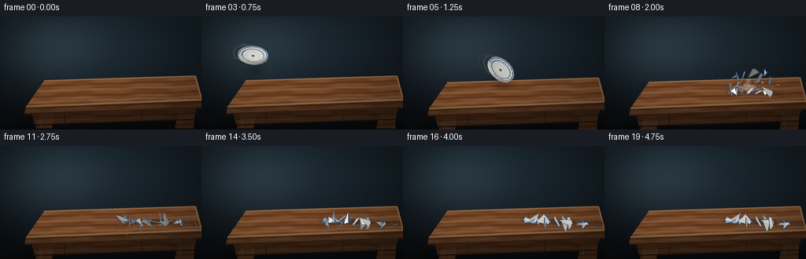
展开代码变化
--- 上一保存版本
+++ 本次保存版本
@@ -97,6 +97,14 @@
for c in base:
out.append(int(clamp((c * scale + 255.0 * gloss * spec) * boost)))
return tuple(out)
+
+
+def smooth_shade(base, normal, gloss=0.12):
+ n = norm(normal)
+ diffuse = max(0.0, n[0] * LIGHT[0] + n[1] * LIGHT[1] + n[2] * LIGHT[2])
+ spec = max(0.0, n[2] * 0.80 + n[0] * -0.40 + n[1] * -0.42) ** 12
+ scale = 0.64 + 0.36 * diffuse
+ return tuple(int(clamp(c * scale + 250.0 * gloss * spec)) for c in base)
def make_background():
@@ -288,12 +296,16 @@
angle = math.atan2(cy, cx)
base = porcelain_color(radius, angle, "bottom" if kind == "bottom" else "top")
if kind == "side":
- base = (212, 211, 201)
- color = shade(base, normal, boost=0.95, gloss=0.10)
+ base = (219, 217, 206)
+ color = smooth_shade(base, normal, gloss=0.12)
elif kind == "bottom":
- color = shade(base, normal, boost=0.94, gloss=0.08)
+ color = smooth_shade(base, normal, gloss=0.04)
else:
- color = shade(base, normal, boost=1.02, gloss=0.20)
+ color = smooth_shade(base, normal, gloss=0.20)
+ # A soft blue-grey reflection on the far inner wall makes the
+ # shallow bowl legible without painting a separate shape.
+ if normal[1] < -0.20 and radius > PLATE_R * 0.34:
+ color = tuple(int(c * 0.93 + d * 0.07) for c, d in zip(color, (116, 139, 157)))
depth = sum(v[2] for v in p) / 3.0
projected.append((depth, p, color, kind))
@@ -311,7 +323,7 @@
for a in range(SECTORS + 1):
ang = 2.0 * math.pi * a / SECTORS
rim_pts.append(project_point((PLATE_R * 0.985 * math.cos(ang), PLATE_R * 0.985 * math.sin(ang), RIM_H), center, rmat))
- draw.line([(x, y) for x, y, _ in rim_pts], fill=(246, 247, 236, 150), width=max(1, SS))
+ draw.line([(x, y) for x, y, _ in rim_pts], fill=(248, 248, 237, 120), width=max(1, SS))
# Small specular glints on the upper-left lip.
glint = []
@@ -366,6 +378,29 @@
pitch = math.radians(46.0 + 8.0 * math.sin(t * math.pi))
roll = math.radians(-26.0 + 102.0 * t)
return (x, y), yaw, pitch, roll
+
+
+def motion_smear(frame):
+ if frame >= IMPACT_FRAME or frame == 0:
+ return Image.new("RGBA", (SW, SH), (0, 0, 0, 0))
+ layer = Image.new("RGBA", (SW, SH), (0, 0, 0, 0))
+ draw = ImageDraw.Draw(layer)
+ center, yaw, pitch, roll = plate_state(frame)
+ rmat = rotation(yaw, pitch, roll)
+ # Trailing rim strokes are shorter, warmer, and intentionally broken up.
+ for lag, alpha, width in ((0.055, 45, 2.4), (0.11, 25, 1.5), (0.17, 12, 1.0)):
+ prior = plate_state(max(0.0, frame - lag * FPS))
+ pc, py, pp, pr = prior
+ prm = rotation(py, pp, pr)
+ pts = []
+ for a in range(0, SECTORS, 3):
+ ang = 2.0 * math.pi * a / SECTORS
+ x = PLATE_R * 0.98 * math.cos(ang)
+ y = PLATE_R * 0.98 * math.sin(ang)
+ p = project_point((x, y, RIM_H), pc, prm)
+ pts.append((p[0], p[1]))
+ draw.line(pts, fill=(241, 231, 213, alpha), width=max(1, int(SS * width)), joint="curve")
+ return layer.filter(ImageFilter.GaussianBlur(sc(0.8)))
def build_shards():
@@ -525,7 +560,7 @@
items.sort(key=lambda item: item[0])
for _, p, color, _ in items:
- draw.polygon([(x, y) for x, y, _ in p], fill=color + (255,), outline=color + (255,))
+ draw.polygon([(x, y) for x, y, _ in p], fill=color + (255,), outline=color + (255,), width=1)
# The blue band survives on the outer edge of many broken pieces.
if shard["max_radius"] > PLATE_R * 0.76:
@@ -627,6 +662,7 @@
if frame < IMPACT_FRAME:
center, yaw, pitch, roll = plate_state(frame)
+ img = Image.alpha_composite(img, motion_smear(frame))
# Contact shadow on the tabletop.
if center[0] > 60.0:
distance = max(0.0, table_surface_y(center[0]) - center[1])
@@ -635,16 +671,6 @@
ry = max(2.0, 4.4 - distance * 0.035)
img = Image.alpha_composite(img, soft_shadow((center[0] + 3.0, shadow_y), rx, ry, 95, 4.0))
- # Two restrained motion echoes sell the throw without turning into clones.
- for back, alpha in ((0.045, 26), (0.09, 10)):
- tf = max(0.0, frame / FPS - back)
- x = -22.0 + 204.0 * min(1.0, tf / (IMPACT_FRAME / FPS))
- yy = 37.0 + 55.0 * (min(1.0, tf / (IMPACT_FRAME / FPS)) ** 1.68)
- ty = math.radians(-38.0 + 48.0 * min(1.0, tf / (IMPACT_FRAME / FPS)))
- tp = math.radians(46.0 + 8.0 * math.sin(min(1.0, tf / (IMPACT_FRAME / FPS)) * math.pi))
- tr = math.radians(-26.0 + 102.0 * min(1.0, tf / (IMPACT_FRAME / FPS)))
- ghost = render_plate((x, yy), ty, tp, tr)
- img = Image.alpha_composite(img, with_alpha(ghost, alpha))
img = Image.alpha_composite(img, render_plate(center, yaw, pitch, roll))
else:
# Shadows land before the shards so the table remains visually solid.
候选 05播放与检查图
点击播放 · 原生 RGB 像素

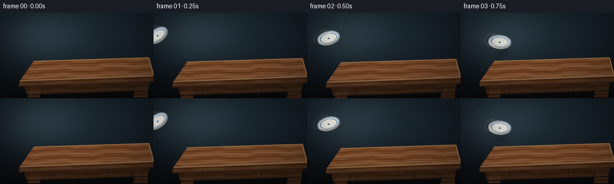
展开代码变化
--- 上一保存版本
+++ 本次保存版本
@@ -560,7 +560,7 @@
items.sort(key=lambda item: item[0])
for _, p, color, _ in items:
- draw.polygon([(x, y) for x, y, _ in p], fill=color + (255,), outline=color + (255,), width=1)
+ draw.polygon([(x, y) for x, y, _ in p], fill=color + (255,))
# The blue band survives on the outer edge of many broken pieces.
if shard["max_radius"] > PLATE_R * 0.76:
可观测工具轨迹
实际执行的命令与返回图片。
命令 1exit 0
/bin/bash -c "pwd && rg --files -g 'prompt.txt' -g 'GENERATION_RULES.md' -g 'task_spec.json' -g '"'!node_modules'"'"
命令 2exit 0
/bin/bash -c 'git status --short && ls -la'
命令 3exit 0
/bin/bash -c 'cat prompt.txt'
命令 4exit 0
/bin/bash -c 'cat GENERATION_RULES.md'
命令 5exit 0
/bin/bash -c "cat task_spec.json && printf '\\n--- artifact_io ---\\n' && sed -n '1,240p' artifact_io.py"
命令 6exit 1
/bin/bash -c 'python generate.py'
命令 7exit 0
/bin/bash -c 'python generate.py'
命令 8exit 0
/bin/bash -c 'command -v montage || command -v ffmpeg || true'
命令 9exit 0
/bin/bash -c "python - <<'PY'
from PIL import Image
im=Image.open('frames/07.png').resize((1024,576),Image.Resampling.NEAREST)
im.save('.tmp/frame07_zoom.png')
PY"命令 10exit 0
/bin/bash -c 'python generate.py'
命令 11exit 0
/bin/bash -c "python - <<'PY'
from PIL import Image
im=Image.open('frames/05.png').resize((1024,576),Image.Resampling.NEAREST)
im.save('.tmp/frame05_zoom.png')
PY"命令 12exit 0
/bin/bash -c "python - <<'PY' import json, numpy as np from PIL import Image from artifact_io import * PY"
命令 13exit 0
/bin/bash -c 'python generate.py'
命令 14exit 0
/bin/bash -c 'python generate.py'
命令 15exit 0
/bin/bash -c "python - <<'PY'
import json
from pathlib import Path
import numpy as np
from PIL import Image
root=Path('.')
spec=json.loads((root/'task_spec.json').read_text())
z=np.load(root/'pixels.npz')['pixels']
print('pixels',z.shape,z.dtype)
print('frames',len(list((root/'frames').glob('*.png'))))
print('index bytes',(root/'index.html').stat().st_size)
print('first/last means',round(float(z[...,0].mean()),2),round(float(z[...,-1].mean()),2))
print('unique frame hashes',len({Image.open(p).tobytes() for p in sorted((root/'frames').glob('*.png'))}))
assert z.shape == (spec['height'],spec['width'],spec['frames'])
assert len(list((root/'frames').glob('*.png'))) == spec['frames']
PY"命令 16exit 0
/bin/bash -c "python - <<'PY'
import json
from pathlib import Path
import numpy as np
from PIL import Image
root=Path('.')
spec=json.loads((root/'task_spec.json').read_text())
z=np.load(root/'pixels.npz')['pixels']
a=np.stack([np.asarray(Image.open(root/'frames'/f'{i:02d}.png'),dtype=np.uint32) for i in range(spec['frames'])])
packed=(a[...,0]<<16)|(a[...,1]<<8)|a[...,2]
print('npz matches PNGs:', np.array_equal(z,packed.transpose(1,2,0)))
changed=[]
for i in range(1,spec['frames']):
changed.append(int(np.count_nonzero(a[i]"'!=a[i-1])))
print('"'pixel changes per transition:',changed)
PY"命令 17exit 0
/bin/bash -c 'python -m py_compile generate.py && git status --short -- generate.py frames pixels.npz inspection.png transition_check.png index.html'
命令 18exit 0
/bin/bash -c "ls -lh generate.py index.html pixels.npz inspection.png transition_check.png frames | sed -n '1,32p'"
视觉工具实际返回图片 1
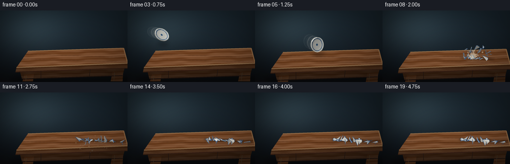
视觉工具实际返回图片 2

视觉工具实际返回图片 3
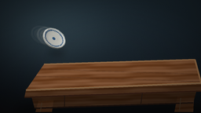
视觉工具实际返回图片 4
视觉工具实际返回图片 5
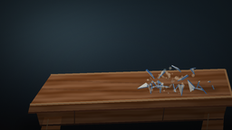
视觉工具实际返回图片 6
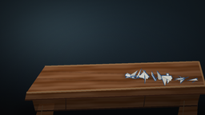
视觉工具实际返回图片 7

视觉工具实际返回图片 8
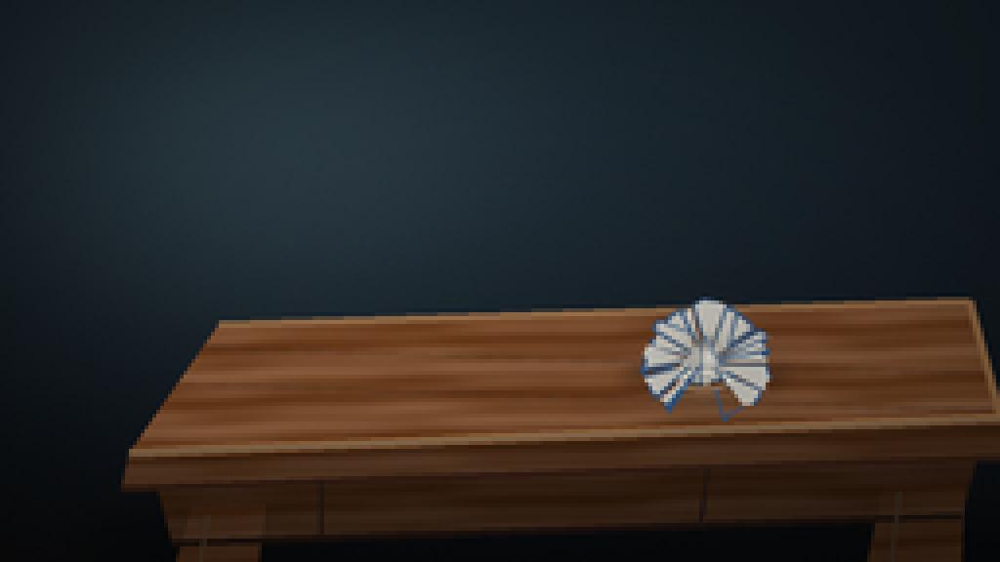
视觉工具实际返回图片 9
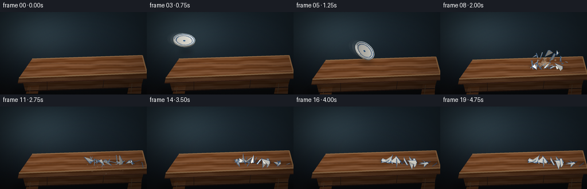
视觉工具实际返回图片 10
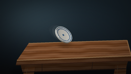
视觉工具实际返回图片 11
视觉工具实际返回图片 12
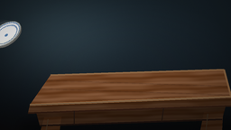
视觉工具实际返回图片 13
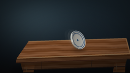
视觉工具实际返回图片 14
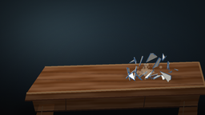
视觉工具实际返回图片 15

视觉工具实际返回图片 16

视觉工具实际返回图片 17

视觉工具实际返回图片 18
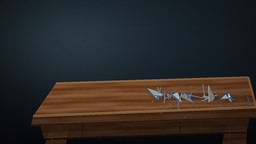
视觉工具实际返回图片 19
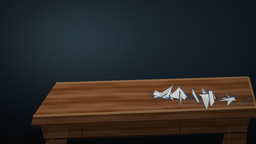
保存候选 5 份；完成命令 18 次；可验证图片返回 19 张。原始 API 响应与完整日志保留在本地。